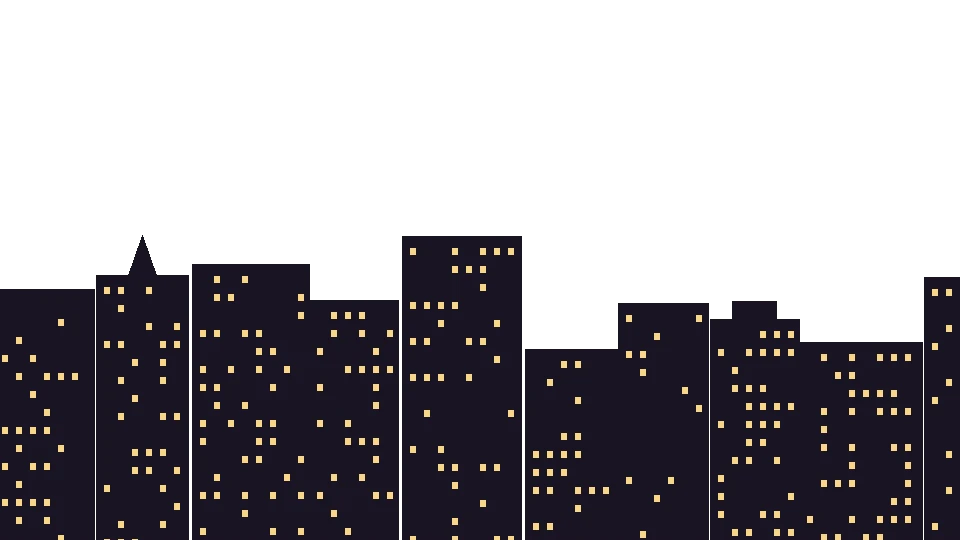

Forty-two rooms, a rooftop bar that opens at sunset and a kitchen that runs until three in the morning. The next section uses a canvas image sequence instead of video, the preferred mode on iOS.
From ₪890 a night, rooftop breakfast included.